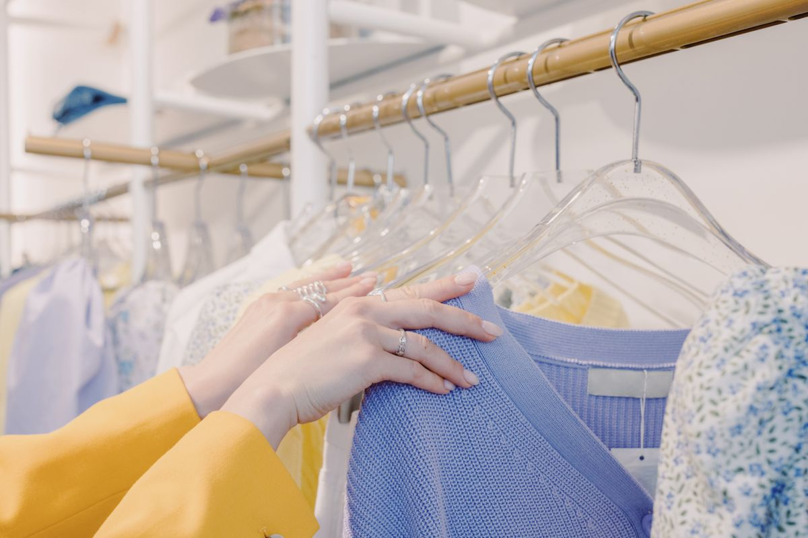
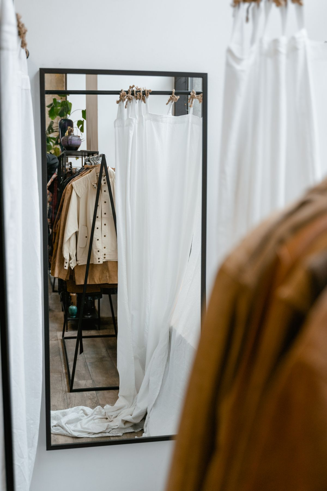

Services at KIN
A women-owned curated boutique in Des Moines' Historic East Village, with home goods, apothecary items, one-of-a-kind jewelry, and aura-photography sessions.
Services
Home goods
Home goods from the shop's curated collection.
Apothecary items
Apothecary items alongside the home goods range.
One-of-a-kind and vintage jewelry
One-of-a-kind jewelry and vintage jewelry, including turquoise pieces.
Crystals
Crystals including palm stones for the shop's spiritual supplies range.
Candles
Candles for gifts and the home.
Tarot decks
Tarot decks from the shop's metaphysical range.
Kindred Auras aura-photography sessions
Kindred Auras aura-photography sessions bookable at the shop.
Gallery


All gallery photos are stock photos, labeled as such. They show the kind of work and setting described on this page, not this business.
Contact
Call +1 515-805-4616 Email kintheshop@gmail.com
KIN serves Des Moines, IA. Questions? Call +1 515-805-4616.